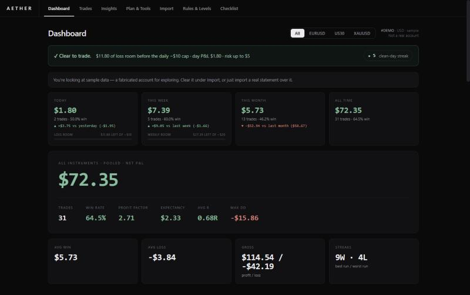

#001
Aether
An offline trading journal for MetaTrader 5. Import your statement, tag what you did, and hold yourself to the risk rules you actually set. I built it because every journal I tried was either paid or sketchy with my data.

- Reads MT5 trade history reports straight from the export, including UTF-16 files
- Rule engine flags every trade that breaks your per-trade, daily or weekly loss caps
- Discipline-adjusted equity curve: your account if you had skipped every rule-breaking trade
- R-multiple distribution, weekday × hour heatmap, drawdown episodes, journal and pre-trade checklist